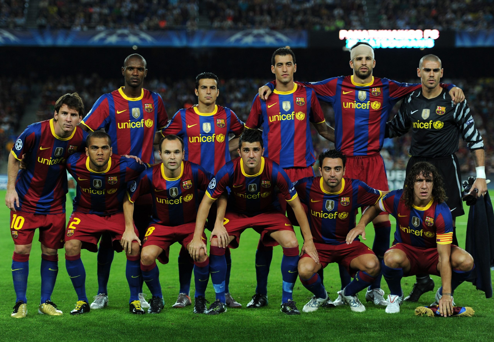

Hello ! My name is Brayan Pena and I would like to tell you more about my athletic career. I have been a soccer player since I was 6 years old and I am currently playing in College. I would like to make a list of where I have played soccer and around what dates I played there !
Down below is a link to the website of my favorite professional soccer club. I have been a fan of this club since I was 9 years old. I would watch this team to learn more about how to play the beautiful sport !
FC Barcelona Team WebsiteI was and still am a huge fan of the club "FC Barcelona" and I would watch them every single time they would play growing up. It is a bit harder to watch them every game now due to school and work, but I still try my best to keep up with everything. Down below is an image of the soccer players who played for FC Barcelona in 2009-2010, which is when I became a fan of them.
